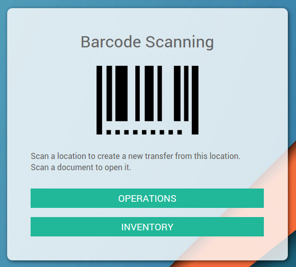

There are two approaches to process incoming receipts: you can either work on printed documents (and scan lines on the documents), or on a screen (and scan products directly).
Process printed incoming receipts:
- Print incoming receipts of the day by selecting all documents from the To Receive list and print Picking Operations from the top menu.
- Once you start processing your incoming receipts, scan the barcode on the top-right corner of the document to load the right record on the screen.
- Then, scan the barcode of every product, or scan the barcode of the product on the picking line if the barcode on the product is not easily accessible, visible or is missing.
- Once you scanned all products, scan the Validate barcode action to finish the operation.
Process incoming receipts from a computer or mobile device:
- Load all the incoming receipts marked as To Receive, and open the first one.
- Pick up and scan each listed product.
- When you've picked all the items, click the Validate button or scan the Validate barcode action to finish the Operation.
- Move to the next incoming receipt to process by clicking on the top-right right arrow or scanning the Pager-Next barcode action.
Example
Open operation interface.
Scan.

The picking appears. Scan items and/or fill in informations using the mouse and keyboard.